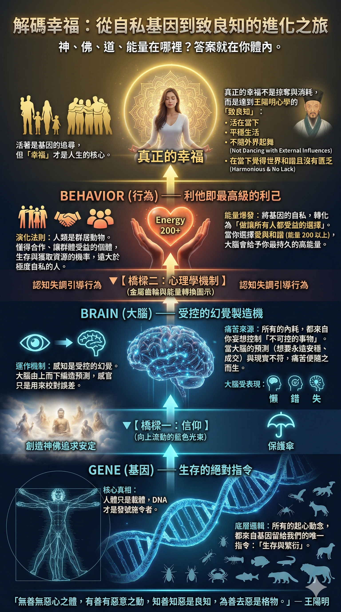

4/23,到群義房屋第一季的頒獎大會, 為 500 人的場次進行分享。
4/23,到群義房屋第一季的頒獎大會, 為 500 人的場次進行分享。 但這次深深打動我的, 是群義的企業宣言: 「群力行義,溫馨滿意; 與人為善,互為貴人。」 這段宣言, 剛好跟我準備的這場演講, 每一個具體方法都互相呼應。 很多時候, 我們會以為每天闡述的道理只是「心法」, 但心法其實就是方向。
#銷售成長 #學習成長 #個人成長
閱讀文章 →由 Orikan 李泰欣撰寫：銷售、客戶溝通、業務成長與思考學習；所有已公開 Vocus 原文與原圖同步在這裡。
4/23,到群義房屋第一季的頒獎大會, 為 500 人的場次進行分享。 但這次深深打動我的, 是群義的企業宣言: 「群力行義,溫馨滿意; 與人為善,互為貴人。」 這段宣言, 剛好跟我準備的這場演講, 每一個具體方法都互相呼應。 很多時候, 我們會以為每天闡述的道理只是「心法」, 但心法其實就是方向。

知識無國界，但教育有界限；知識無界限，但教法有界限。 只要是世界上的知識都是共同的，不論是透過圖書館或 AI 都能查到，人與人之間也可以互相傳遞，但「教法」卻因人而異。 老師教的知識或許正確，但如果教法不當，就會讓學生的吸收產生偏差。所以，如果你曾經在學習路上覺得被「割韭菜」，那往往不是知識本身不對
一個人要改變，一定要先覺察。 沒有覺察，就不會知道自己正在重複什麼模式。 沒有覺知，就不會知道這個模式從哪裡來。 不知道從哪裡來，就不可能真正改變。 覺察是發現。 覺知是知道自己發現了什麼。 改變則是把這份知道，落實到下一次的行為裡。 而「覺」有三個層次。 1. 不知不覺 對自己的行為找不出原因。
悲觀者永遠正確，樂觀者永遠前行 悲觀，是最廉價的生存方式。 不翻書就能考零分，躺平就能迎接失敗。 遇到不如意的事，隨時都能拿來證明自己沒有工作運。 遇到客戶拒絕，雙手一攤：「真衰，遇到不買的人。」 所以，悲觀者永遠能夠完美地自我證明。 他們總是理直氣壯地說著：「你看，我就說吧，我就是做不到，這個客

新世代業務的下一步是什麼？ 不是更會介紹產品。 不是更會追客戶。 而是成為「領導型的銷售」。 所謂領導型的銷售，必須在三個層面具備領導力： 第一，領導自己。 第二，領導 AI。 第三，領導團隊。 這件事的本質，要從「十倍好」來看。 很多人以為，兩倍好比較簡單，十倍好比較困難。 但事實剛好相
你從來沒看過自己對客戶的樣子。10 次照鏡子練習：拿手機錄下整段對話，自己看回放找 1 個壞習慣，每次只改那 1 個。
讀《逆思維》給我的三個震撼 原本我以為《逆思維》是一本教人如何逆向思考的書，結果發現不是。 讀完後我深深覺得，它更像是在告訴我們：為什麼人人都應該學會重新再思考一次。 這本書從三個層面，徹底拆解了我們的思維慣性，也讓我對銷售、教學與人生有了全新的體悟。 第一、關於自己：為什麼要重新思考自己的
葉公問政。子曰：「近者說，遠者來。」 子夏為莒父宰，問政。子曰：「無欲速，無見小利。欲速則不達，見小利則大事不成。」 如果你問我，怎麼擴大團隊？ 我會告訴你：先讓身邊的人幸福。 如果你問我，怎麼立刻有業績？ 我會告訴你：欲速則不達。 當別人看見你身邊的人過得很好，自然會想靠近你、了解你，甚至
「除了期待幸福，人沒有理由推究哲理。」 — 奧古斯丁 《解惑》這本書，似乎什麼都說了；卻也似乎什麼都沒說。似乎我們都聽過，卻又好像什麼都聽不懂。 人為什麼會快樂？大腦追求和諧。所謂和諧，不是表面的和平，而是內在世界與外在世界的契合。 內在世界：什麼是真正的你？不是只有你眼中的自己，而是你，加
今天去演講，很有幸能跟房地產界的神人聊天。 楊崗學長是一位非常厲害的 Top Sales： 1. 連續 7 年突破千萬經紀人 2. 連續 4 年突破兩千萬經紀人 從他今天分享的許多觀點裡， 我整理出三點， 給房仲業的朋友， 及每個行業銷售都可以參考。 第一，能夠快速辨別對方的個性， 知道對方
子曰：君子謀道不謀食。耕也，餒在其中矣；學也，祿在其中矣。君子憂道不憂貧。 君子每天思考和謀求的事情是與「道」有關的，而不是只停留在衣食物質層面。 努力耕田，也可能會面臨挨餓；在學習之中，俸祿可能也在其中了。 因此，君子應該擔心的是「道」能不能守住，而不是擔心物質上的貧窮。 納瓦爾說：「金錢是社

還沒學著怎麼活，就先想著怎麼死 還沒學會經營愛情，就先擔心分手 還沒看見這個瘋狂世界，就先當了沙發馬鈴薯 還沒學會怎麼成交，就先怕著被拒絕 還沒學會怎麼體驗，就先訓練憂鬱焦慮 我們什麼都還沒開始，就先學會了放棄 死法只有一種，活法卻有一萬種 從未認真想過，怎麼活好 這一生，我們真的來過嗎？ 是
或曰：「以德報怨，何如？」 子曰：「何以報德？以直報怨，以德報德。」 子曰：「莫我知也夫！」 子貢曰：「何為其莫知子也？」 子曰：「不怨天，不尤人。下學而上達，知我者其天乎！」 老子講「報怨以德」。 我們一直以來學到的，也常常是以德報怨。 但孔子的看法不同。 孔子說： 「以德報怨，何以報德？

Jerry 是一位有近 20 年資歷的銷售顧問。 但真正讓我佩服的，不是他的資歷。 而是他明明很資深， 卻還願意問、願意學。 他讓我想到孔子說的： 「敏而好學，不恥下問。」 聰慧、好學， 也不因為對方比自己年輕， 就覺得不想開口詢問 還有一句話，我覺得更像 Jerry：
今天收到 Jerry 的回饋。 Jerry 是一位有近 20 年資歷的銷售顧問。 但真正讓我佩服的，不是他的資歷。 而是他明明很資深， 卻還願意問、願意學。 他讓我想到孔子說的： 「敏而好學，不恥下問。」 聰慧、好學， 也不因為對方比自己年輕， 就覺得不想開口詢問 還
公伯寮愬子路於季孫。子服景伯以告，曰：「夫子固有惑志於公伯寮，吾力猶能肆諸市朝。」子曰：「道之將行也與，命也；道之將廢也與，命也。公伯寮其如命何！」 子曰：「賢者闢世，其次闢地，其次闢色，其次闢言。」子曰：「作者七人矣。」 子路宿於石門。晨門曰：「奚自？」子路曰：「自孔氏。」曰：「是知其不可而為之者
衛靈公問陳於孔子。孔子對曰：「俎豆之事，則嘗聞之矣；軍旅之事，未之學也。」明日遂行。 在陳絕糧，從者病，莫能興。子路慍見曰：「君子亦有窮乎？」子曰：「君子固窮，小人窮斯濫矣。」 第一段是關於衛靈公問孔子怎麼打仗的時候。孔子直接回說：「祭祀的事情我倒是聽過，但如果是打仗的事情，我從來沒有學過。」隔天

你會不會覺得成長是一件很累的事？ 「成長是困難的」，認清成長的四個難點： 1. 學習的悖論 這是樊登提出來的概念。你認同一個人一定要改變才會成長、才會更快嗎？沒錯。然而，你最需要的東西，往往是你「不知道自己不知道」的東西。正因為你不知道，你根本不曉得要從何學起，甚至覺得沒有學習的必要，這就是第一
子曰：「古之學者為己，今之學者為人。」 子曰：「可與言而不與之言，失人；不可與言而與言，失言。知者不失人，亦不失言。」 古人學習是為了修養自己，現在有些人學是為了證明給別人看。 樊登說，學習並不是一件高尚的事，不是說學習不好， 是不需要包裝讓人覺得高尚，而是你真的因為學習，成為了一個更好的人。

子曰：群居終日，言不及義， 好行小慧，難矣哉！ 有些人喜歡一群人在一起， 談論一些瑣碎的小事， 沒有談論有價值的事，耍小聰明。 有些人沒有辦法忍受孤獨， 找了很多人相處在一起， 只是在一群人當中感受到更孤獨而已。 所以，人要學會獨處。 想要自由，你就要承載孤獨， 享受自己的時間， 好好地思考、學

子曰：「人無遠慮，必有近憂。」 子曰：「躬自厚而薄責於人，則遠怨矣。」 這兩句話，可以成為我們的人生座右銘。 這個「慮」，是指長遠思考、未來規劃，而不是憂慮。 孔子說，人如果沒有思考長遠的事情，就一定會有眼前的憂患。 如果沒有想過未來要怎麼過得更輕鬆，那你勢必每天都一樣忙碌。 如果沒有思
子貢問為仁。子曰：工欲善其事，必先利其器。居是邦也，事其大夫之賢者，友其士之仁者。 子曰：志士仁人，無求生以害仁，有殺身以成仁。 這兩段都是我們很常聽到的成語出處，尤其是「工欲善其事，必先利其器」。 原來這句話講的是問怎麼培養「仁」，孔子的回覆是：事奉賢者，跟仁德的人交朋友。 你想要培養仁德，

內心有多強大，能看見的世界就有多大；先穩住心，才有能力承接更大的選擇與責任。

從童年不敢開口的願望，到送母親休旅車的故事；李泰欣談能力、選擇與把努力用來照顧家人的意義。
想提升業績與影響力，不只靠技巧；用德性、能力與結果金字塔，重新建立可被看見的價值。
如何不被自己的見聞與情緒困住？從張載的觀點，練習把心放大，理解人與世界。
客戶說「我要回去跟老婆商量」怎麼回？辨識延遲成交背後的三種訊號，讓對話有下一步。
客戶說「我只是看看」怎麼回？這不一定是不買，而是信任尚未建立；用六種軟拒絕判斷下一步。
舊客戶怎麼重新聯絡？找回手機裡被放棄的客戶，補上跟進節奏與關係經營的業績缺口。
業務如何不靠強迫說服而成交？讓客戶自己說出需求與理由，建立更有信任感的成交對話。
業績想做快，為什麼要先慢下來？頂尖業務用穩定節奏，累積更快也更長久的成果。

自媒體經營不是打造人設；比起害怕被看破，更重要的是讓修身與真實價值被看見。

學習焦慮怎麼辦？問題不只在學得不夠，而在沒有把知識消化、練習並變成自己的能力。

學而時習之不是反覆背誦；把知識練成能力，才能真正用在工作、銷售與人生選擇。
成交需要進取，但長久合作需要底線。用中庸思維，找到業務推進與信任關係的平衡。
中庸不是沒有態度；理解狂、狷與底線，才能在銷售與工作中知道何時前進、何時守住原則。

做決定時常缺的不是答案，而是重要訊息。用訊息地圖整理盲點，讓判斷更完整、更不容易後悔。
科學知識與人生智慧如何互補？從看見世界的不同方法，練習更完整的思考與判斷。
和而不同不是討好或反對。保有獨立判斷，同時能與人合作，是成熟溝通的重要能力。
說話要有羞恥心，做事才有責任感。從承諾與行動一致，建立別人願意信任的長期關係。
認知失調為何讓人抗拒改變？理解進步與怨恨的拉扯，才能面對不想承認的矛盾並真正成長。
項羽比劉邦更會打仗，為何仍輸掉天下？從楚漢相爭看真正領導者如何用人、分利與整合團隊。
客戶跟進已讀不回怎麼辦？問題往往不在客戶，而在訊息只催答案、沒有提供下一步價值。
學很多銷售技巧，面對客戶卻斷片？這不是記憶力差，而是還沒把知識練成能在現場使用的能力。
房市冷、市場量縮時，如何提高每位買方的掌握度？用三個銷售系統把冷市場變成追上業績的機會。

保險業務人數下降時，留下來的超業做對了什麼？用名單管理、成交 SOP 與效率工具建立可複製的銷售系統。

AI 不好用，常常不是工具問題，而是問題沒有定義清楚。先建立思考架構，才能讓 AI 放大你的工作成果。

為什麼會在工作與生活中不斷內耗？從大腦與控制感的角度，重新理解那些讓人陷住的受控幻覺。

別把顯化當成許願魔法。從大腦科學、刻意練習與身份認同出發，用行動塑造真正想要的未來。
你以為自己沒自信，可能是自尊系統出了問題。理解自信、自尊與成長思維，找回穩定而非逞強的力量。
很努力卻依然卡關，未必是努力不夠，而是還沒看見真正要解的問題。從學習與認知模型找回方向。
壓力不是意志力不足，而是挑戰與能力失衡。從生理、心理與認知三個層次，練習把壓力變成成長動力。

內向的 I 人、DISC C 型能不能做好業務？理解自己的特質，建立不必硬撐外向也能成交的銷售方法。

不想當業務，也每天都在推銷自己。理解銷售的本質，讓專業、價值與溝通能力真正為你創造機會。

業務如何用行事曆自動計算通勤時間、減少趕場與漏約？一個隱藏設定，讓每天行程更可靠。

整理資料與慢速打字，正在吃掉本來能拿去成交的時間。從語音輸入與客戶紀錄，改善業務日常效率。

眼中只有錢，反而賺不到錢？看見業務員容易落入的四個平庸陷阱，重新建立價值、執行與學習節奏。

2025 年，我用閱讀、聽書與教學實驗重新認識無知。把知識變成能分享、能實踐的判斷力，才是學習的開始。

業務不是什麼錢都賺，也不是不敢賺錢。用中庸與價值交換，找到專業、收入與長期信任的平衡。

你越拜託客戶，客戶越想封鎖。避開四個常見聯絡錯誤，用三個做法把銷售接觸從打擾變成期待。